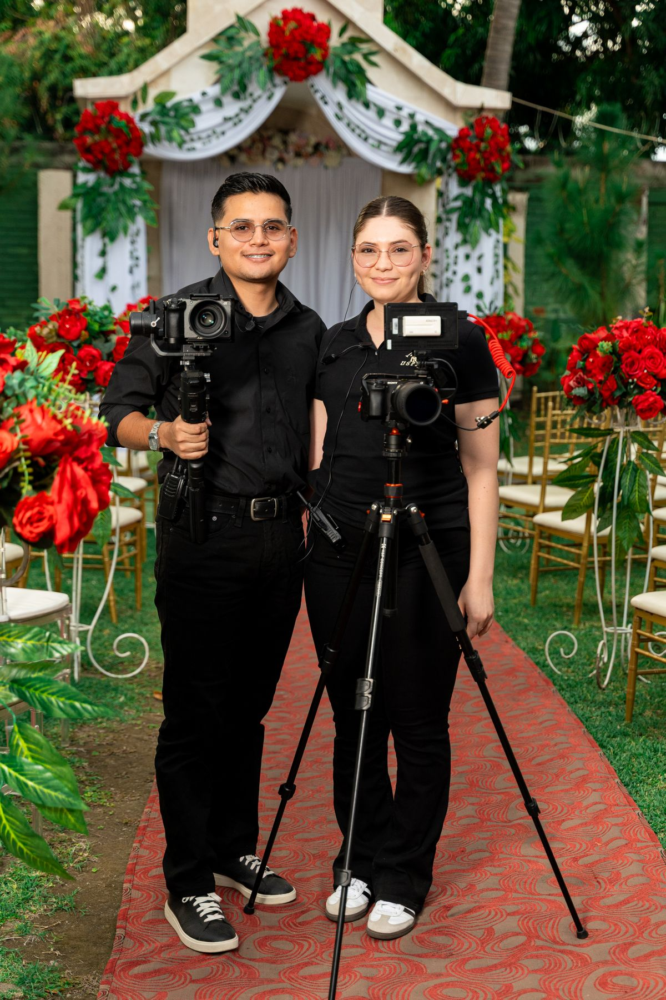
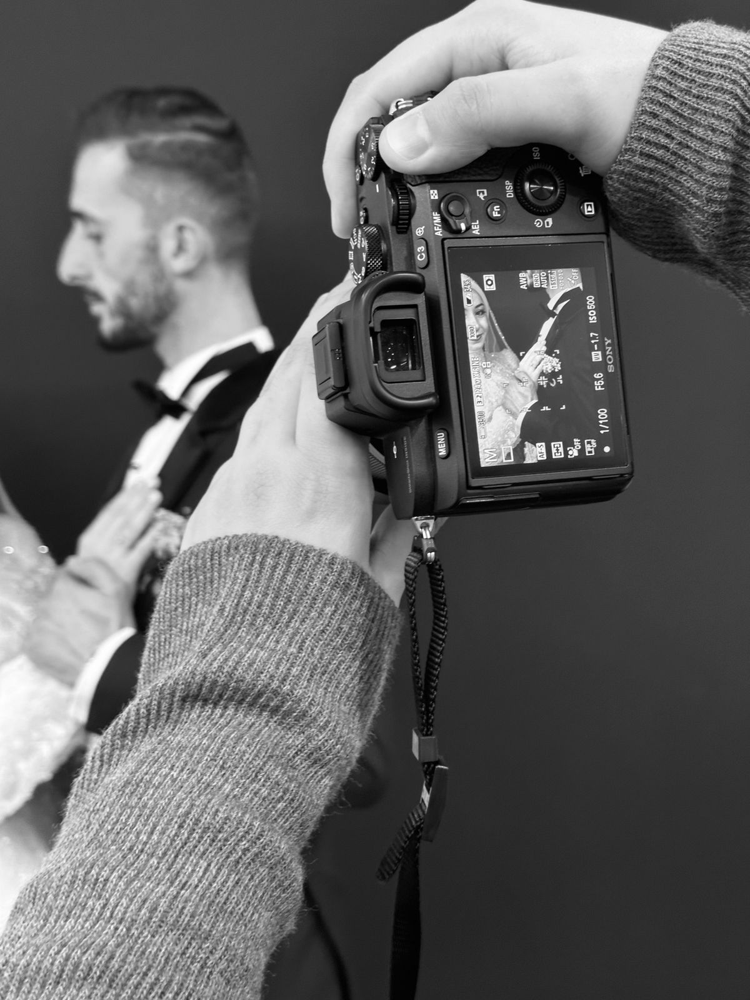

Photography at Nashville Photography Group
An award-winning wedding photography studio in Nashville, founded in 2007.
Weddings worldwide
Portraits
Entertainers
Events
Commercial and advertising photography
Gallery


All gallery photos are stock photos, labeled as such. They show photographers at work, not this studio's photographers or clients.
Contact
Call (615) 830-8449 Email info@nashvillephotogroup.com
Nashville Photography Group serves Nashville, TN. Questions? Call (615) 830-8449.